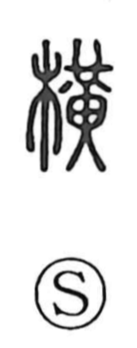

横

Uncategorized
Kun: yoko | On: ou
horizontal ・ sideways ・ width ・ crossbar
Explanation
A phono-semantic character: the wood element 木 gives the notion of a wooden object, while 黄 supplies the sound. Shirakawa notes that 黄 originally depicts the jade pendant worn at the waist, the huang (璜), here used as a phonetic. In origin, 横 named the length of wood set across a door as a locking bar; from this concrete image it broadened to mean “across, horizontal,” as the counterpart to 縦 “vertical.” Because 縦 also carries the sense of following or complying, 横 by contrast came to suggest bending off course, obstructing, or acting on one’s own, which gives the character its occasional wayward nuance.